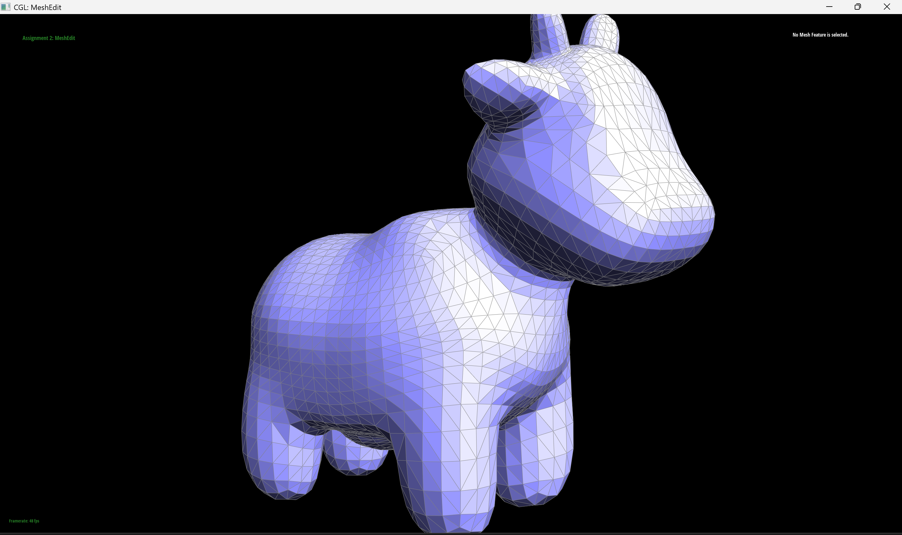

CS184/284A Spring 2025 Homework 2 Write-Up
Link to webpage: Isabella Hu and Kunhong Lyu's HW website
Link to GitHub repository: github.com/cal-cs184/hw2-meshedit-cooked.git
Overview
In this assignment, we implemented several fundamental computer graphics techniques for mesh processing and topology operations:
- Bézier Curves and Surfaces: Applied de Casteljau’s algorithm to recursively interpolate points along Bézier curves based on control points. We extended this same technique to Bézier surfaces by first applying the algorithm in one parametric direction, then using those intermediate points as input to apply de Casteljau for the the other direction.
- Triangle Mesh Operations: Implemented proper normal calculations, which combined with Bézier curves to produce smoother shading. Using the half-edge data structure, we built edge flipping and splitting operations, then combined them to implement Loop subdivision for mesh operation.
These techniques provide the foundation for modern modeling and animation systems, enabling geometric/topology transformations, motion path generation, etc.
An interesting thing I learned: I finally understood how half-edge works. Also I saw that working with lower-level structures required a lot of tedious work such as manually reassign edges, half-edges, and face, etc.
Section I: Bezier Curves and Surfaces
Part 1: De Casteljau Algorithm
The De Casteljau algorithm recursively evaluates Bézier curves:
- Takes a set of Bézier curve control points as input
- Uses linear interpolation to evaluate points at parameter t
Implementation steps:
- Perform linear interpolation: (1-t)ai + tai+1 on consecutive control points at parameter t
- Repeat interpolation on the resulting points until only one point remains - this is the point on the Bézier curve at time t
For Part 1, since we only needed to return the vector of new points after one De Casteljau step, so recursion wasn't needed.
|
|

|

|

|

|

|

|
|
|
Part 2: Bezier surfaces with separable 1D de Casteljau
To extend de Casteljau's algorithm to Bézier surfaces given the parameters u and v:
-
Evaluate each row at parameter u:
- Apply
evaluate1D(..., u)to each row of control points - Store the result of each evaluation (a single point per row) in a new vector, named
grouping
- Apply
-
Evaluate the resulting vector at parameter v:
- Use the
groupingvector from step 1 - Apply
evaluate1D(grouping, v) - This reduces the vector to a single point, which is the Bézier surface value at (u, v)
- Use the
Implementation of evaluate1D helper function:
- Recursively calls itself (
evaluate1D) on a vector of points returned byevaluateStep - Continues until only one point remains - which is the point on the Bézier curve at time t
Section II: Triangle Meshes and Half-Edge Data Structure
Part 3: Area-weighted vertex normals
Implementation:
-
Iterate over adjacent faces:
- Using the half-edge data structure, set the pointer to a halfedge
- Start from the vertex's outgoing half-edge, traverse neighboring faces through halfedges using:
h = h→twin()→next() - Use a
do-whileloop that checks the stopping condition after each iteration - Terminate when returning to the initial half-edge
-
Compute face areas:
- Implemented helper function:
getArea(FaceCIter f)to calculates triangular face area using cross product:Area = 0.5*||edge₁ × edge₂||the edges are calculated from the tree vertices of that face.
- Implemented helper function:
-
Calculate final normal:
- Sum all face normals weighted by their areas
- Normalize the resulting vector to unit length
|
|
|
Part 4: Edge flip
Implementation:
- Get all elements that will be effected by the flip using halfedge traversal:
- Vertices: v0 (bottom), v1 (top), v2 (left), v3 (right)
- Faces: f0 (left face), f1 (right face)
- Halfedges: h0 (main), h1 (top-left), h2 (bottom-left), h3 (twin), h4 (bottom-right), h5 (top-right)
- Reassign attributes:
- Update
next()relationships - Reassign vertex and face connections for each halfedge
- Update
halfedgereferences for vertices and faces
- Update
Implementation Tip: Drawing both the original and new structures made the reassignment process significantly easier than pure mental reasoning.

|

|
Part 5: Edge split
The Edge split implementation logic is very similar to the edge flip one
- Extract all existing elements that will be effected by the split:
- Vertices: v0, v1 (edge endpoints), v2, v3 (opposite vertices)
- Faces: f0, f1 (adjacent triangles)
- Halfedges: h0 (main), h1, h2, h3 (twin), h4, h5
- Create new elements:
- New vertex m at midpoint of v0 and v1
- New faces f2, f3 for subdivided triangles
- New edges e1, e2, e3 connecting m to v2, v3, and v1
- New halfedges h6-h11
- Reassign all attributes:
- Update connections for both existing and new elements
- Update pointers for halfedges, vertices, twins, edges, and faces
Implementation Tip: Again, similar to edge flipping, a visualization of pre- and post-split diagrams help a lot during reassignment.
|
|
|
|
|

|
Extra Credit: Support Edge Splits for Boundary Edges
To add boundary handling for edge splits, we added
an if condition that checks whether that edge lies
on the boundary. The overall logic remains similar to regular
edge splits.
Added Implementation:
-
Added an
ifcondition: checks if either the halfedge or its twin is a boundary using theisBoundary()function. -
If the twin is the actual boundary halfedge, we reassign it
to
hfor consistency. -
Identify the relevant mesh elements that will be affected:
v0andv1: the vertices of the edge being splitv2: the third vertex of the non-boundary triangleF0: the non-boundary face that we are splitting- Associated halfedges
-
Create new elements during the split:
- A new vertex
mat the midpoint of the edge betweenv0andv1 - Create 1 new face (resulted from splitting)
- Introduce new edge to connect
mtov2 - Construct new halfedges
- A new vertex
- Update the connectivity of all affected elements.
|
|
|
Part 6: Loop subdivision for mesh upsampling
Loop subdivision increases the number of triangles in the mesh. For a non-boundary face, each triangle is split into four sub-triangles.
Implementation:
1. Smooth the Mesh by Updating Vertex Positions
For each original vertex, we traverse all its neighboring vertices using halfedge traversal to compute a smoothed position. Using the formula:
newPosition = (1 − n ⋅ u) ⋅ position + u ⋅ ∑(neighbor positions)
- n: Number of adjacent vertices
- u: Weight factor (use 3/16 if n = 3, otherwise use 3/(8n))
2. Compute New Edge Midpoint Positions
Iterate through each edge using EdgeIter. For each edge, compute the
new midpoint position as:
newPosition = (3/8)(A + B) + (1/8)(C + D)
- A, B: Endpoints of the edge
- C, D: Opposite vertices of adjacent triangles
3. Split Every Edge
Since the behavior of EdgeIter during mesh
mutation may be unstable, we first store all original edges in a
list and iterate through it. For each edge:
- Call the
SplitEdgefunction to create a new vertex at the edge's midpoint. - Assign the precomputed position (stored in
e->edge) to the newly created vertex. - Mark new edges with
isNew = trueto identify them for the edgeflip stage.
4. Flip New Edges
Iterate through all edges. For any edge that is:
- New (
isNew = true) - Connecting an original vertex and a newly created vertex
Apply edge flipping to improve mesh regularity.
5. Update Final Vertex Positions
Copy newPosition to position for all
vertices
|
|
|
|
|
|
Observations
Smoothing of Sharp Edges
After applying loop subdivision, sharp edges are noticeably smoothed, and sharp corners become increasingly rounded with each iteration. This is because old vertex positions are recalculated during Step 1, averageing each old vertex with its surronding neighbors. After 3–4 iterations, a cube begin to resemble a smooth, sphere-like object.
To reduce this smoothing effect and preserve the original sharp edges, we can pre-split the shape’s edges. Since the new position of each original vertex depends on its surrounding vertices, increasing the density of vertices near sharp edges reduces the influence of smoothing. As a result, the vertex will not deviate too much from its original position.
|
|
|
|
Asymmetry
The asymmetry that arises after loop subdivision is a result of the cube’s initial topology. Each face is originally split into two triangles diagonally. During subdivision, new triangles are added along this diagonal, resulting in skewed and uneven triangle that break the symmetry of the mesh.
To reduce this asymmetry, we can pre-process the cube by split each diagonal edge on every cube face so that each face is composed of four symmetric triangles.
|
|
|
|
|
|

|
|
Extra Credit: Boundary Handling for Loop Subdivision
For vertices and edges on mesh boundaries, we use a different weighting schemes. Modifications:
Step 1: Boundary Vertex Update
For old vertices on boundaries, its new position is calculated by:
newPosition = 0.75 * position + 0.125 * (left_neighbor + right_neighbor)
To avoid overly smoothing the boundary vertices, we give their original position a higher weight.
Step 2: Boundary Edge Update
For edges on boundaries, the new vertex's position is calculated by:
newPosition = 0.5 * (A + B)
- Simple average of endpoint positions
- Different from interior edges which use 3/8 + 1/8 weighting from 4 surrounding vertices
All other steps (edge splitting, flipping, etc.) remain the same.
|
|
|
Extra Credit: Root-3 Subdivision
Instead of splitting edges, Root-3 subdivision splits faces directly and smooths the surface through recursive centroid insertion and flipping.
Implementation:
1. Insert Centroid Vertex for Each Face
- Compute the centroid by averaging its three vertex positions
- Create a new vertex at this centroid position
- Store the face–vertex pair for later use
2. Split Each Face into 3 New Faces
- For each original face, connect its centroid to its three original vertices
- This splits the face into three smaller triangular faces
- Implemented by calling the helper function
addFace(), creating:- 3 new edges
- 2 new faces
- Updated halfedge connectivity
3. Smooth Old Vertices
-
For non-boundary vertices:
- Calculate a smoothing weight
betabased on vertex valence and update positions using a weighted average of neighbors
- Calculate a smoothing weight
-
For boundary vertices:
- On even iterations: Split the boundary edge and update position using
0.125 * (neighbor_sum + 6 * current_pos) - On odd iterations: Leave position unchanged to avoid over-smoothing boundaries
- On even iterations: Split the boundary edge and update position using
4. Flip Edges
- Flip edges that connect two old vertices
5. Update Vertex Positions and Flags
- Copy updated positions back into each vertex
- Update
isNewstatus for next subdivision
|

|
|
|